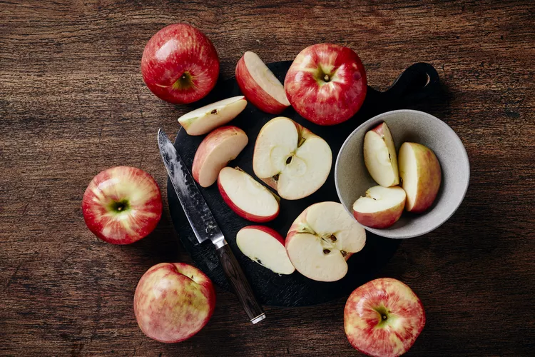

By Lindsey DeSoto, RD Published on August 25, 2023
Apples (Malus domestica) are the most consumed fruit in the United States. They come in various colors and flavors and are commonly eaten raw as a snack or cooked into baked goods. Apples are also used to produce ciders, juices, jams, and wine.
In addition to their culinary uses, apples are known for their numerous health benefits. Evidence shows that eating apples can improve digestion and protect against chronic diseases like diabetes and heart disease, among other benefits.
Here's everything you need to know about the health benefits of apples and how to incorporate them into your diet.
Apples, especially with the skin on, are a rich source of fiber, polyphenols, and other nutrients that support heart health.
Several studies have linked apples to a lower risk of heart disease. One 2020 review found that eating 100-150 grams (g) of whole apples daily (around one small apple) is associated with a decreased risk of heart disease and risk factors such as high cholesterol and high blood pressure.
In addition, daily apple consumption was associated with a 27% lower risk of dying from a stroke and a 25% lower risk of dying from heart disease.
Apples are rich in antioxidants, which may decrease cancer risk by neutralizing cancer-causing free radicals.
In addition, research suggests that the phytochemicals in apples can help slow down the growth of cancer cells and prevent them from multiplying.
The fiber found in apples may also help protect against colorectal cancer. Recent findings from the American Institute for Cancer Research suggest that for every 10-gram increase in dietary fiber, there's a 7% decrease in the risk of colorectal cancer.
Several observational studies suggest that apples may help decrease the risk of:
However, more human studies are needed to confirm the anti-cancer effects of apples.